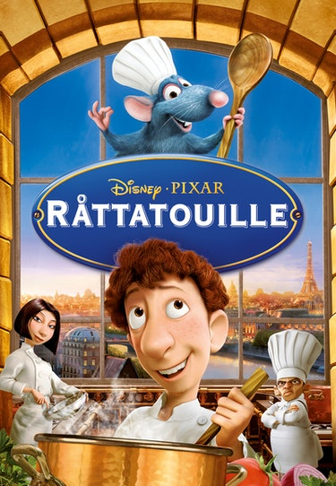

Ratatouille
Ratatouille": A Culinary Delight from Director Brad Bird
Ratatouille," a heartwarming and delectable animated film, directed by the talented Brad Bird, has enchanted audiences with its unique blend of humor, creativity, and gastronomic delights. Released in 2007, the movie takes viewers on a captivating journey into the world of culinary excellence and the unlikeliest of chefs. Set in the enchanting city of Paris, "Ratatouille" follows the story of Remy, a rat with an extraordinary palate and a fervent passion for cooking. Unlike his fellow rodents, Remy aspires to more than scavenging for scraps. He dreams of becoming a renowned chef, an ambition that seems almost impossible given his species. The film beautifully portrays Remy's determination to break away from societal expectations and embrace his true calling.: